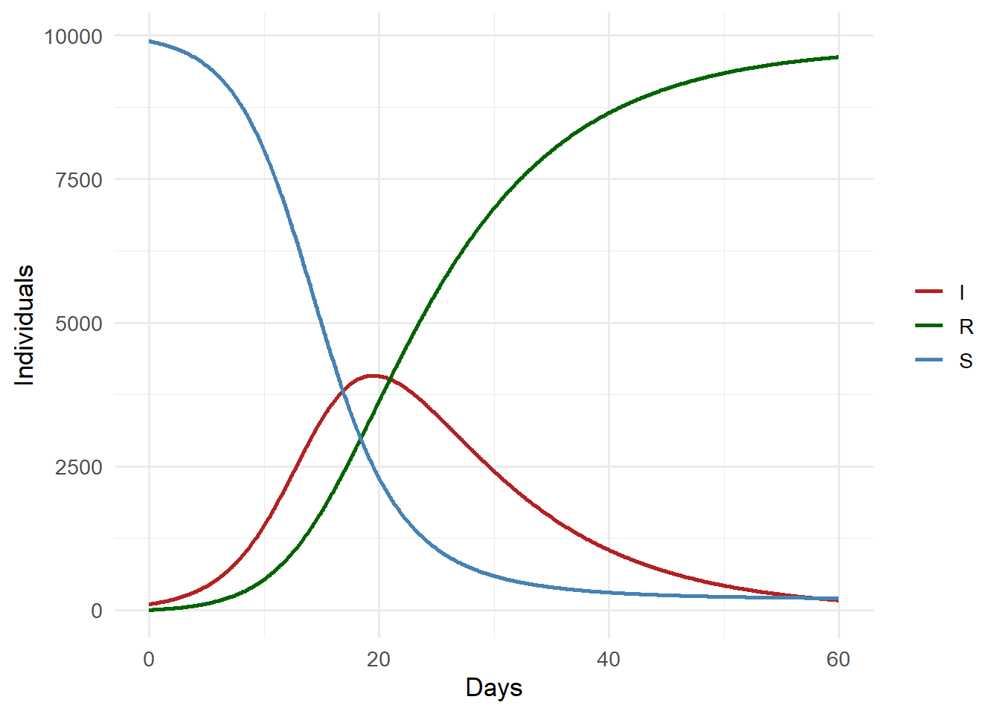

The Production Gap: From Research Code to Software Product
Why your epidemic model works in R but breaks in production — and how to fix it. Post 1 in the Building Digital Twin Systems series.
digital twin
software engineering
Python
R
reproducibility
Author
Jong-Hoon Kim
Published
April 23, 2026
1 The gap nobody talks about
You have built an epidemic model that works. It fits data, recovers parameters, and produces credible forecasts. You have written it carefully in R or Python, and the results appear in a paper.
Now someone asks you to run it for them. They want to give it their data, get results, and pay for the service.
This is where almost every research model breaks — not because the science is wrong, but because research code is built to be run once by the person who wrote it, not to run reliably at any time for any user.
This post describes the gap between research code and production software, and provides a concrete set of habits to close it. It is the foundation for everything in this series. Wilson et al. (1) and Sandve et al. (2) provide comprehensive treatments; this post is a distilled, applied version focused on simulation software.
2 What breaks when research code meets production
2.1 Hard-coded paths and environments
Research code is full of paths like /Users/yourname/Desktop/data/outbreak.csv. The moment someone else runs it, or you run it on a cloud server, everything breaks. The same problem appears with R library paths, Python virtual environments, and system-level dependencies.
# Research code — breaks immediately on any other machinedata <-read.csv("/Users/jonghoon/Desktop/POLYMOD_2017.csv")model_output <-run_sir(data, beta =0.4, gamma =0.2)write.csv(model_output, "/Users/jonghoon/results/sir_output.csv")
# Production-ready — paths are arguments, not constantsrun_model <-function(input_path, beta, gamma, output_path) { data <-read.csv(input_path) model_output <-run_sir(data, beta = beta, gamma = gamma)write.csv(model_output, output_path)invisible(model_output)}
2.2 No input validation
Research code trusts itself. Production code must distrust everything it receives. A user who sends a negative beta, a data frame with missing columns, or dates in the wrong timezone will produce silent wrong answers — or a crash with an unhelpful error message.
# Fragile — crashes or silently wrong if inputs are badrun_sir <-function(S0, I0, R0, beta, gamma, days) {# ... model code}# Robust — validates before computingrun_sir <-function(S0, I0, R0, beta, gamma, days) {stopifnot(is.numeric(beta), beta >0, beta <10,is.numeric(gamma), gamma >0, gamma <1,is.numeric(days), days >0, days ==round(days), S0 >0, I0 >=0, R0 >=0 )# ... model code}
2.3 No tests
If you change one function, how do you know nothing else broke? Research workflows rely on the scientist visually checking outputs. Production software requires automated tests that run in seconds and catch regressions before they reach users.
2.4 State in global variables
Interactive R sessions accumulate state: objects in .GlobalEnv, options set with options(), random seeds set somewhere in the session. Code that works interactively fails when run fresh in a clean environment because it depends on something that was set five steps earlier.
# Hidden state dependency — works in an interactive session, fails elsewheregamma <-0.2# set somewhere earlier in the scriptforecast_sir <-function(beta, days) {# Uses gamma from the global environment — invisible dependencyrun_sir(beta = beta, gamma = gamma, days = days)}# Self-contained — all dependencies explicitforecast_sir <-function(beta, gamma, days) {run_sir(beta = beta, gamma = gamma, days = days)}
2.5 No versioning of model and data together
A research model evolves. Parameters change, equations are corrected, new compartments are added. Without versioning, the model that produced last month’s report is gone. Reproducibility requires that the code, data, and environment that produced any result can be recovered exactly (2).
3 The minimal production-ready SIR model in R
Here is a self-contained, validated, testable SIR model that illustrates the principles above. Nothing is hard-coded, all inputs are validated, and the function is easy to test.
sir_model <-function(S0, I0, R0 =0, beta, gamma, days,dt =0.1) {# --- input validation ---stopifnot(is.numeric(S0), S0 >0,is.numeric(I0), I0 >=0,is.numeric(beta), beta >0,is.numeric(gamma), gamma >0, gamma <1,is.numeric(days), days >=1 ) N <- S0 + I0 + R0 steps <-round(days / dt) out <-matrix(0, nrow = steps +1, ncol =4,dimnames =list(NULL, c("time", "S", "I", "R"))) out[1, ] <-c(0, S0, I0, R0) S <- S0; I <- I0; R <- R0for (i inseq_len(steps)) { new_inf <- beta * S * I / N * dt new_rec <- gamma * I * dt S <- S - new_inf I <- I + new_inf - new_rec R <- R + new_rec out[i +1, ] <-c(i * dt, S, I, R) }as.data.frame(out)}# Run itresult <-sir_model(S0 =9900, I0 =100, beta =0.4,gamma =0.1, days =60)head(result, 4)
time S I R
1 0.0 9900.000 100.0000 0.00000
2 0.1 9896.040 102.9600 1.00000
3 0.2 9891.964 106.0060 2.02960
4 0.3 9887.770 109.1404 3.08966
library(ggplot2)library(tidyr)result_long <-pivot_longer(result, cols =c(S, I, R),names_to ="compartment",values_to ="count")ggplot(result_long, aes(x = time, y = count,colour = compartment)) +geom_line(linewidth =1) +scale_colour_manual(values =c(S ="steelblue",I ="firebrick",R ="darkgreen")) +labs(x ="Days", y ="Individuals", colour =NULL) +theme_minimal(base_size =13)

SIR model trajectories. The I compartment peaks around day 30.
4 Writing tests for your model
A test checks that known inputs produce known outputs. For a simulation, tests are often:
Boundary tests: R0 = 1 means no net growth; setting gamma = beta should stabilise the epidemic.
Conservation tests: S + I + R should equal N at every step.
Regression tests: a reference scenario whose output is saved and checked against future runs.
# Conservation: N must be constanttest_conservation <-function() { r <-sir_model(S0 =9900, I0 =100, beta =0.3,gamma =0.1, days =100) N <-9900+100 max_deviation <-max(abs(rowSums(r[, c("S","I","R")]) - N))if (max_deviation >0.01) {stop(paste("Conservation violated: max deviation =",round(max_deviation, 4))) }message("Conservation test passed")}# Boundary: I(∞) → 0 for R0 < 1test_subcritical <-function() { r <-sir_model(S0 =9990, I0 =10, beta =0.05,gamma =0.2, days =200) final_I <-tail(r$I, 1)if (final_I >1) {stop(paste("Subcritical epidemic did not die out; I =",round(final_I, 2))) }message("Subcritical test passed")}test_conservation()test_subcritical()
Both tests pass. In a real project these would live in a tests/ directory and be run automatically every time code changes, using testthat in R or pytest in Python.
5 Python packaging: structuring code to be imported
The same model in Python, structured as a proper package rather than a script:
# File: sir_model/model.pydef sir_model(S0: float, I0: float, beta: float, gamma: float, days: int, dt: float=0.1, R0: float=0.0) ->list[dict]:""" Deterministic SIR model via Euler integration. Parameters ---------- S0, I0, R0 : initial compartment sizes beta : transmission rate (per day) gamma : recovery rate (per day) days : simulation length dt : time step (days) Returns ------- List of dicts with keys time, S, I, R """ifnot (beta >0and gamma >0and days >=1):raiseValueError("beta > 0, gamma > 0, days >= 1 required") N = S0 + I0 + R0 steps =round(days / dt) results = [{"time": 0.0, "S": S0, "I": I0, "R": R0}] S, I, R = S0, I0, R0for i inrange(1, steps +1): new_inf = beta * S * I / N * dt new_rec = gamma * I * dt S -= new_inf I += new_inf - new_rec R += new_rec results.append({"time": round(i * dt, 6),"S": S, "I": I, "R": R})return results
# File: sir_model/__init__.pyfrom .model import sir_model # makes `from sir_model import sir_model` work
# File: sir_model/tests/test_model.pyimport pytestfrom sir_model import sir_modeldef test_conservation(): N =10_000 result = sir_model(S0=9900, I0=100, beta=0.3, gamma=0.1, days=100)for row in result: total = row["S"] + row["I"] + row["R"]assertabs(total - N) <0.01, f"N drift at t={row['time']}: {total}"def test_subcritical(): result = sir_model(S0=9990, I0=10, beta=0.05, gamma=0.2, days=200)assert result[-1]["I"] <1.0, "Subcritical epidemic did not fade"def test_invalid_input():with pytest.raises(ValueError): sir_model(S0=100, I0=10, beta=-0.3, gamma=0.1, days=50)
Running pytest from the project root executes all tests in under a second. If you change model.py and a test fails, you know immediately before any code reaches a user.
6 The pyproject.toml: declaring what your code needs
[project]name="sir-model"version="0.1.0"description="Production SIR epidemic model"requires-python=">=3.11"dependencies=["numpy>=1.26","pandas>=2.0",][project.optional-dependencies]dev=["pytest","ruff","mypy"][build-system]requires=["hatchling"]build-backend="hatchling.build"
Anyone can now install your model with pip install . and the correct dependencies are fetched automatically. There are no “it works on my machine” problems because all dependencies are explicit.
7 The ten-minute checklist
Before putting any simulation code in front of users, check these items (3):
Check
Research code
Production code
Paths
Hard-coded
Arguments or config file
Dependencies
Implicit
Listed in requirements.txt / pyproject.toml
Inputs
Trusted
Validated at boundaries
Random seed
Set interactively
Explicit argument
Tests
None
Conservation, boundary, regression
Error messages
R traceback / Python traceback
Informative user-facing message
Version
“latest”
Tagged release
8 What comes next
This post established the discipline needed to write software that others can depend on. The next post builds directly on it: we take the validated sir_model function and expose it as a REST API using FastAPI, so that any program — not just R or Python scripts — can call your model over HTTP.
9 References
1.
Wilson G, Aruliah DA, Brown CT, Chue Hong NP, Davis M, Guy RT, et al. Best practices for scientific computing. PLoS Biology. 2014. doi:10.1371/journal.pbio.1001745
2.
Sandve GK, Nekrutenko A, Taylor J, Hovig E. Ten simple rules for reproducible computational research. PLoS Computational Biology. 2013;9(10):e1003285. doi:10.1371/journal.pcbi.1003285
3.
Taschuk M, Wilson G. Ten simple rules for making research software more robust. PLoS Computational Biology. 2017;13(4):e1005412. doi:10.1371/journal.pcbi.1005412